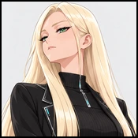

Player wiki noticeThis community-maintained page may contain gameplay, story, and mature-content spoilers.

概览和时间表
Zosia是25岁的教师 世界知识综合研究所 未来时代 边区她的画像可以使用 每天早上9点到7点,没有额外的介绍 或爱的旗帜她的时间表要求。
她最喜欢的数据是 情报70、技术65和认知60她的特殊关系技巧是 研究。这些是角色简介设置;当前角色没有个人的Talk、Gifft、心对心、日期、partment或招聘工人的动作。目前没有注册的个人或共享的情节可以授予她的爱意。因此,在当前游戏中没有更长的浪漫经历。
研究所培训和经验教训
研究所有: 位置动作,从 Zosia 的肖像中分离出来。它们不需要她的爱意或授予Zosia 关系点。该位置目前已解锁,并在未来弗林格区可见。
| 行动 | 要求 | 费用 | 结果 |
|---|---|---|---|
| 学习未来技术 | 没有额外的统计和感情门 | 60分钟;能源30;Calm30 | 技术+1;可重复 |
| 材料科学 | 智能19+;尚未学习的技能 | 180分钟;200美元;能源60;Calm50 | 学习材料科学 |
| 数据挖掘 | 技术20+;尚未学习的技能 | 180分钟;200美元;能源60;Calm50 | 学习数据挖掘 |
| 数字法医 | 技术18+;尚未学习的技能 | 180分钟;200美元;能源60;Calm50 | 学习数字法医学 |
| 文化适应 | 智能14+;尚未学习的技能 | 180分钟;200美元;能源60;Calm50 | 学习文化适应 |
四个学习技能动作在已知其命名技能之后隐藏起来,它们目前的定义没有增加付费版本或更高功率要求。研究是Zosia的剖面技能;这四个课程并不教它。
解决问题
- Zosia的肖像不见了: 早上9点到晚上7点去研究所参观
- 无法选择个人演讲 没有为当前游戏中的此字符配置 。
- 缺少位置课程 : 检查其情报/技术门槛,以及其技能是否已经获得学习。
- 培训不会增加Zosia的感情: 学院培训是一项定位行动,没有Zosia关系奖励。
信用和当前范围
对照 Zosia 的当前注册,时间表,空洞的个人动作和对话列表,所有图案奖励密钥,研究所位置和所有五个实际的训练定义进行校验. 原始的游戏简介肖像是使用现有的wiki家风格.
相关页面
Overview and Schedule
Zosia is the25-year-old tutor at the Universal Knowledge Synthesis Institute in the Future era's Fringe Zone, with Neutral alignment. Her portrait is available 9 AM–7 PM,every day, with no additional introduction or affection flag required by her schedule.
Her favorite stats are Intelligence70,Technology65 and Perception60, and her special relationship skill is Researching. These are character profile settings;the current character has no personal Talk,gift,heart-to-heart,date,apartment or worker-recruitment actions. No registered personal or shared plot currently awards her affection. A longer romance walkthrough is therefore not available in the current game.
Institute Training and Lessons
The Institute has the following location actions,separate from Zosia's portrait. They do not require her affection or award Zosia relationship points. The location is currently unlocked and visible in the Future Fringe Zone.
| Action | Requirement | Cost | Result |
|---|---|---|---|
| Learn Future Technology | No additional stat or affection gate | 60 minutes;Energy30;Calm30 | Technology+1;repeatable |
| Material Science | Intelligence19+;skill not already learned | 180 minutes;$200;Energy60;Calm50 | Learn Material Science |
| Data Mining | Technology20+;skill not already learned | 180 minutes;$200;Energy60;Calm50 | Learn Data Mining |
| Digital Forensics | Technology18+;skill not already learned | 180 minutes;$200;Energy60;Calm50 | Learn Digital Forensics |
| Cultural Adaptation | Intelligence14+;skill not already learned | 180 minutes;$200;Energy60;Calm50 | Learn Cultural Adaptation |
The four learned-skill actions hide after their named skill is known. Their current definitions add no paid-version or Higher Power requirement. Researching is Zosia's profile skill;these four lessons do not teach it.
Troubleshooting
- Zosia's portrait missing: visit the Institute between9 AM and7 PM.
- No personal Talk orromance options: none are configured for this character in the current game.
- A location lesson missing: check its Intelligence/Technology threshold and whether its skill is already learned.
- Training does not raise Zosia's affection: Institute training is a location action and has no Zosia relationship reward.
Credits and Current Scope
Verified against Zosia's current registration,schedule,empty personal-action and conversation lists,all plot reward keys,the Institute location and all five actual training definitions. The original game profile portrait is used with the existing wiki house style.
Related Pages
Text adapted from the community-maintained Chronoromancer Wiki under CC BY-SA 4.0.